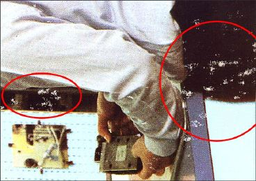
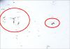
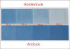
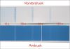
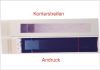
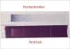

ABLEGEN / ABSCHMIEREN IM STAPEL
|
Fehlerdefinition und Auswirkung:
Unter Ablegen/Abschmieren im Stapel versteht man
die Übertragung der frischen Druckfarbe auf
die Rückseite des nachfolgenden Bogens im
Auslagestapel der Druckmaschine. Es resultiert im
Stapel beim untenliegenden Bogen eine Fehlstelle im
Druck und beim Nachfolgebogen durch die
übertragene Druckfarbe eine Verschmutzung der
unbedruckten Rückseite bzw. des Druckbildes
bei beidseitigem Druck (Abb. 1 und Abb. 2).
|

|
Abb. 1: Fehlstellen im Druck wegen Ablegen der
Druckfarbe im Stapel.
|
|
|
|
Mögliche Ursachen:
|
|

|
|
Abb. 2: Verschmutzung des Folgebogens wegen
Ablegen der Druckfarbe im Stapel.
|
|
|
|

|
|
Abb. 3: Wegschlagtest mit langsam wegschlagendem
Papier (Zeitverlauf:15 s bis 120 s).
|
|
|
|

|
|
Abb. 4: Wegschlagtest mit schnell wegschlagendem
Papier (Zeitverlauf:15 s bis 120 s).
|
|
|
|
|
|
Abb. 5: Trockenzeitprüfgerät der Fa.
prüfbau.
|
|
|
|

|
|
Abb. 6: Ergebnis des Trockenzeittests mit
Farbreihenfolge Cyan-Magenta.
|
|
|
|

|
|
Abb. 7: Ergebnis des Trockenzeittests mit
Farbreihenfolge Magenta-Cyan.
|
|
|
|

|
|
|
|
|
|

|
|
|
|
|
|
|
Das Wegschlagverhalten des Bedruckstoffes und/oder der
Druckfarbe hat einen großen Einfluss auf das Ablegen.
Bei zu langsamem Wegschlagverhalten von Bedruckstoff
und/oder Druckfarbe verbleibt im Moment des Kontaktes mit
dem Folgebogen ein hoher Anteil der noch nicht verfestigten
Druckfarbe an der Bedruckstoffoberfläche und wirkt wie
eine adhäsive Schicht. Durch den steigenden Stapeldruck
kommt es dann zu einer Verfestigung zwischen den
aufeinanderliegenden Bogen.
Beispiele von Papieren mit langsamem und normal schnellem
Wegschlagverhalten sind auf den Abb. 3 und Abb. 4
dargestellt.
Wenn der oxidative Trocknungsprozess verzögert
abläuft, können ebenfalls Ablegeerscheinungen
auftreten.
Wird kein Druckbestäubungspuder oder ein Puder mit zu
geringer Korngröße eingesetzt, kann das zu
Verzögerungen der oxidativen Trocknung führen. Das
Druckbestäubungspuder gewährleistet einen gewissen
Abstand und somit den Einschluss von Sauerstoff
(Luftkissenbildung) zwischen den bedruckten Bogen.
Bei leichteren Papieren findet im Auslagestapel
gegenüber schwereren Papieren bzw. Kartons eine bessere
Luftkissenbildung statt. Aus diesem Grund können zu
hohe Stapel bei schweren Kartons das Ablegen ungünstig
beeinflussen.
Die Farbschichtdicke hat einen generellen Einfluss auf die
Druckfarbentrocknung. Je höher die Farbschichtdicke
ist, desto langsamer verläuft die Trocknung und desto
größer ist die Gefahr des Ablegens.
Der pH-Wert des Feuchtmittels spielt ebenfalls eine Rolle.
Sinkt der pH-Wert des Feuchtmittels unter 4,5 ist mit
Trocknungsverzögerungen und somit mit Ablegen zu
rechnen.
Werden Zusatzstoffe der Druckfarbe, insbesondere
Trockenstoffe, nicht im richtigen Maß dosiert,
können Trocknungsverzögerungen und somit Ablegen
auftreten.
Das Emulgieren der Druckfarbe mit Feuchtmittel beeinflusst
die Trockenzeit. Bei übermäßig emulgierter
Druckfarbe resultieren Trocknungsverzögerungen; die
Gefahr des Ablegens steigt.
Wird beim Bedrucken von speziellen Papieren - z. B.
gussgestrichene Papiere - mit zu hohen Stapeln produziert,
steigt die Gefahr des Ablegens.
Bei der Lagerung von Drucken kann durch partielle
Überbelastung, wie es beim Übereinanderstapeln von
Paletten möglich ist, Ablegen auftreten.
Bei starker Ausnutzung des Bogenformates bis zur Hinterkante
ist eine Rolltendenz der Bogen nicht auszuschließen,
wodurch ein Ablegen der Druckfarbe vornehmlich an der
gewölbten Hinterkante hervorgerufen wird.
Nicht planliegendes Papier kann ein partielles Ablegen
verstärken.
Bei starker elektrostatischer Aufladung von Papier nach dem
Druck kommt es im Auslagestapel zum Aneinanderhaften der
bedruckten Bogen. Die Abstandshaltung durch das
Druckbestäubungspuder und der Luftkisseneffekt sind
dann nicht mehr gewährleistet, was das Ablegen
ungünstig beeinflussen kann.
|
Mögliche Abhilfen:
|
|
Im Bogenoffset ist grundsätzlich, um Ablegen zu
vermeiden, eine optimale Abstimmung der Kombination:
Druckfarbe/Papier dringende Voraussetzung. Dies kann am
besten in einem Druckversuch oder im Labor erfolgen. Auf
diese Art können gut verträgliche Kombinationen
ausgetestet und für zukünftige Aufträge
eingesetzt werden. Der Einsatz einer
„Standarddruckfarbe“ für alle Papiersorten
wäre zwar wünschenswert, Praxisergebnisse beweisen
allerdings immer wieder, dass dies nicht realistisch
ist.
Sofern der Drucker Einfluss auf die Wahl des Papiers hat,
sollten Papiere mit schnellem Wegschlagverhalten eingesetzt
werden.
Ebenso sollten Druckfarben mit schnellem Wegschlagverhalten
eingesetzt werden.
Achtung: Zu schnelles Wegschlagen hat Abmehlen (siehe dort)
zur Folge.
Übermäßig hohe Farbschichtdicken, die zu
Trocknungsverzögerungen führen, sind
reprotechnisch durch den Einsatz von UCR
(Unterfarbenreduzierung) zu vermeiden. Weiterhin empfiehlt
sich der Einsatz von Papieren und/oder Druckfarben mit hoher
Ergiebigkeit. Bei Druckfarben oder Papieren mit hoher
Ergiebigkeit können im Vergleich zu Materialien mit
geringerer Ergiebigkeit gleiche Farbdichten im Druck mit
geringerer Farbschichtdicke erzielt werden.
Zusatzstoffe oder Trockenstoffe sind in der vom Hersteller
angegebenen Dosierung anzusetzen.
Der pH-Wert des Feuchtmittels sollte nicht kleiner als 4,5
sein.
Beim Bedrucken von Spezialpapieren (z. B. Transparentpapiere
oder Folien) ist es ratsam, sich in Gesprächen mit dem
Druckfarbenhersteller eine günstige Kombination aus
Druckfarbe, Zusatzstoffe und Feuchtmittel empfehlen zu
lassen.
Übermäßiges Emulgieren der Druckfarbe sollte
durch optimale Einstellung des
Druckfarbe/Feuchtmittel-Gleichgewichts vermieden werden. Bei
geringer Farbabnahme empfehlen sich Farbabnahmestreifen am
Rand der Druckform.
Wenn vorhanden, sollte im Bogenoffset mit IR-Trocknung
gedruckt werden. Die IR-Trocknung bewirkt durch
Viskositätsverminderung der Mineralöle
verbessertes Wegschlagen der Druckfarbe und durch die
Temperaturerhöhung im Stapel eine Beschleunigung des
oxidativen Trocknungsprozesses.
Beim Bedrucken von speziellen Papieren (z. B.
gussgestrichene Papiere) und schweren Kartons ist es
empfehlenswert, niedrige und dafür mehrere Stapel zu
produzieren.
Bei der Lagerung von Drucken ist darauf zu achten, dass
keine partiellen Überbelastungen entstehen.
Wichtig ist auch die richtige Auswahl der
Korngröße des Druckbestäubungspuders und die
richtige Einstellung der Bestäubungsdüsen.
Zur Vermeidung des Einrollens von Bogen nach dem Druck
sollte, wenn möglich, bei der Sujetverteilung darauf
geachtet werden, dass farbintensive Flächen in der
vorderen Bogenhälfte gedruckt werden.
Nichtplanlage des Papiers kann durch einen Streckgang,
jedoch bei zusätzlichem Zeitaufwand, kompensiert
werden.
|
Beispiel(e):
|
|
Ablegen wegen falscher Farbreihenfolge:
Bei diesem Reklamationsfall handelt es sich um einen
4/4-farbigen Verpackungsdruck auf beidseitig gestrichenem
Karton. Seitens der Druckerei wurde der Karton wegen Neigung
zum Ablegen reklamiert. Der Drucker verwendete nach seiner
Aussage handelsübliche Bogenoffsetfarben für
Karton und gab zusätzlich an, in den Druckwerken Cyan
und Magenta die Farbreihenfolge vertauscht zu haben. Es
wurde also in der Farbreihenfolge Schwarz-Magenta-Cyan-Gelb
gedruckt. Beim Hauptfarbton der Verpackung handelt es sich
um ein rötliches Blau mit hohem Anteil von Cyan. Der
FOGRA wurden zur Ursachenermittlung unbedruckte Muster des
Auflagenkartons und Druckfarbenproben übersandt. Bei
den Untersuchungen stand die Frage im Vordergrund, ob sich
durch das Vertauschen der Farbreihenfolge die
Trocknungseigenschaften verändert hatten. Um diesen
Einfluss zu prüfen, erfolgten Probedrucke mit richtiger
Farbreihenfolge (Cyan-Magenta) und Probedrucke mit der
geänderten Farbreihenfolge (Magenta-Cyan). Unmittelbar
nach Erstellen der Drucke wurden die zweifarbig nass-in-nass
bedruckten Streifen einem Trockenzeittest unterzogen. Bei
diesem Test wird der frische Druck mit unbedrucktem Papier
gekontert. Dieses „Sandwich“ läuft mit
gleichbleibender Geschwindigkeit bei definiertem
Anpressdruck zwischen ein Walzenpaar (Abb. 5). Solange dabei
die Druckfarbe nicht trocken ist, ergibt sich auf dem
unbedruckten Konterpapier ein Farbabdruck. Die Länge
der Konterspur kann nach dem Test unter
Berücksichtigung der Durchlaufgeschwindigkeit in die
Trockenzeit umgerechnet werden.
Die Testergebnisse wiesen dabei für beide Variationen
der Farbreihenfolge in etwa gleiche Trockenzeit (Abb. 6 und
7) auf. Ein wesentlicher Unterschied zeigte sich aber im
Farbeindruck. Bei der richtigen Farbreihenfolge Cyan-Magenta
ergab sich gegenüber der falschen Farbreihenfolge
Magenta-Cyan ein wesentlich bläulicherer Farbton (Abb.
6 und 7). Da der zu erzielende Farbton des Auflagendrucks
eher dem der richtigen Farbreihenfolge entsprach, sah sich
der Drucker gezwungen, bei falscher Farbreihenfolge die
Farbdichte im Cyan wesentlich zu erhöhen, um den
gewünschten Blauton zu erzielen. Farbdichtemessungen
bestätigten dies und ergaben für Cyan einen
densitometrischen Farbdichtewert von 2.1. Üblicherweise
wird bei gestrichenen Materialien mit einer Farbdichte im
Cyan von ca. 1.5 bis 1.6 gedruckt.
Das Ablegen wurde also letztendlich wegen partieller
Überfärbung im Cyan, wiederum
zurückzuführen auf die falsche Farbreihenfolge,
hervorgerufen.
|
Allgemeine Hinweise:
|
|
Für den Reklamationsfall:
Druckausfallmuster sicherstellen.
Unbedruckte Papiermuster und unbedruckte Vergleichsmuster
sicherstellen (ca. 20 Blatt DIN A4). An diesen Mustern
können im Labor vergleichende Wegschlagtests,
Probedrucke und Trockenzeittests vorgenommen werden.
Druckfarbenproben (aus dem Farbkasten) und evtl.
Vergleichsfarben sicherstellen.
Zusatzstoffe bereitstellen.
Stapel auf Planlage prüfen.
Flächendeckungsgrad in den Bildtiefen ermitteln.
Produktionsdaten protokollieren.
Ergänzende Literatur:
WEISSENBORN, M.:
Ablegen, Abschmieren, Verblocken.
In: Print & Produktion, Mag. 7 (1994), Nr. 7 - 8, S. 22
- 23
FALTER, K.-A.:
Anforderungen des Offset-Verfahrens an gestrichene
Papiere.
In: Wochenblatt für Papierfabrikation, (1973), Nr. 17,
S. 664-668
WALENSKI, W.:
Wann welches Druckhilfsmittel?
(Marktübersicht-Druckhilfsmittel im Offsetdruck).
Bergisch Gladbach: Zanders Feinpapiere AG, Bibliothek Papier
+ Druck
PANTEL, G.:
Fehlern auf der Spur - Aktuelle Problemfälle aus der
Gutachtertätigkeit der FOGRA.
In: FOGRA-Sysmposium „Papiere und Druckfarben“
(1995) - Tagungsbericht
|
|
|
|
|
|
|
Kontakt:
pantel@fogra.org
|
Abl-pan-200111
|